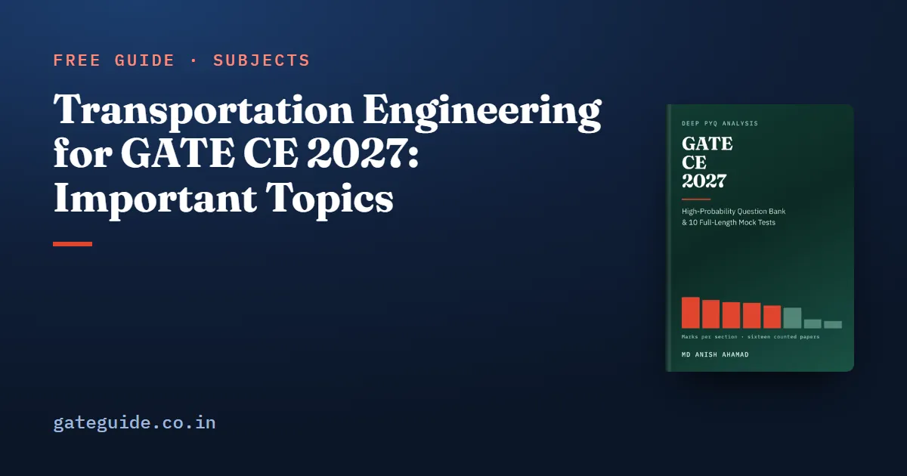

Transportation Engineering for GATE CE 2027: Important Topics

Transportation Engineering averages 10.0 marks a paper across all sixteen GATE Civil papers from 2019 to 2026, Set 1 and Set 2 in each year, and ranges from 6 to 12. That is 160 marks from 103 questions, each counted against its official answer key. This guide covers the three examined topics: traffic, highway geometry with its railway and airport items, and pavements. Transportation Planning, new for 2027, has its own guide, since it has no past paper to learn from.
In this guide
Key takeaways
- Traffic Engineering carries 62 of the 160 counted marks, Transportation Infrastructure 56 and Highway Pavements 42. None can be dropped.
- Traffic flow fundamentals (speed, flow, density) appear in fifteen of the sixteen papers and carry 35 marks on their own.
- Highway geometric design appears in all sixteen papers, mostly as one-mark questions on sight distance and curves.
- Railways (11 marks, all on cant and curves) and airports (12 marks, almost all on runway length) are small, formulaic and regular.
- In pavements, materials, bitumen tests and mix volumetrics carry more marks than flexible and rigid design together.
Where the 160 marks sit
| Topic | Marks | Questions | Share | Trend (2023–26 minus 2019–22) |
|---|---|---|---|---|
| Traffic Engineering | 62 | 36 | 39% | −14 |
| Transportation Infrastructure | 56 | 41 | 35% | +4 |
| Highway Pavements | 42 | 26 | 26% | +4 |
The section ran at 9 to 12 marks a paper in every year except 2023, when both sets fell to 6. Start a trend line at 2023 and the section appears to grow; it did not, the series simply began at a dip. The subject-wise weightage guide sets this section beside the other eight. Civil is sat as two different papers a year, which is why every citation below names the set; how GATE normalises the two sets explains how they are put on one scale.
The topic totals are the book's. Grouping the same 103 counted questions by what each one asked gives a finer picture. That grouping is this guide's reading of the count files, and it adds up to the same 160 marks:
| What the question asked | Marks | Questions | Papers (of 16) |
|---|---|---|---|
| Traffic flow fundamentals | 35 | 19 | 15 |
| Highway geometric design | 33 | 25 | 16 |
| Pavement materials, bitumen and mixes | 23 | 14 | 11 |
| Traffic studies (speeds, PHF, counts) | 14 | 9 | 7 |
| Airport runway length and corrections | 12 | 9 | 9 |
| Railway cant and curves | 11 | 7 | 7 |
| Rigid pavements | 10 | 6 | 4 |
| Flexible pavements | 9 | 6 | 5 |
| Signal design | 9 | 6 | 6 |
| Capacity and level of service | 4 | 2 | 2 |
Traffic Engineering: 62 marks
The fundamental diagram is the section's most dependable question. It missed only 2024 Set 2. The standard form is a linear (Greenshields) speed-density relation from which you find the maximum flow, , as in 2019 Set 1, CE Q.45, 2024 Set 1, Q.44 and 2025 Set 1, Q.40. Variants ask for the speed at maximum flow, the headway at capacity or the two speeds that give one flow. Others ask you to read the curves: 2020 Set 1, Q.42 wanted the shock-wave transition on a flow-density curve, and 2022 Set 2, Q.63 the shock-wave speed itself. Do not assume the model is always linear: 2026 Set 2, Q.60 used a logarithmic one.
Space-mean speed is the concept most often got wrong. The relation needs the space-mean speed, the harmonic mean of spot speeds, which is always the smaller of the two means. 2021 Set 1, Q.63 asked for it from five spot speeds and 2026 Set 1, Q.33 from travel times.
Traffic studies are short numericals: the peak hour factor (2019 Set 1, CE Q.21; 2022 Set 1, Q.64; 2025 Set 1, Q.23), AADT from adjustment factors, and spot-speed statistics.
Signal design is thinner than its reputation. Webster's method is named in the syllabus, and four questions asked for a Webster cycle or green time (2021 Set 1, Q.35; 2021 Set 2, CE Q.24; 2022 Set 1, Q.62; 2022 Set 2, Q.65), but none has appeared since 2022. All nine signal-design marks fall in 2019–2022, which is most of Traffic's −14 trend. Learn ; it takes an hour.
Transportation Infrastructure: 56 marks
Highway geometric design: 33 marks, all sixteen papers
Mostly one-mark questions, on a narrow set of ideas: the make-up of stopping sight distance (2023 Set 2, Q.23), SSD on a grade (2024 Set 1, Q.22), superelevation (2021 Set 1, Q.25), extra widening (2023 Set 2, Q.30; 2025 Set 2, Q.64) and the length of vertical curves (2019 Set 1, CE Q.47; 2022 Set 2, Q.62; 2024 Set 2, Q.63; 2026 Set 2, Q.61, a valley curve by headlight distance). Hold
with in km/h and in metres.
Horizontal and vertical curves left the Geomatics syllabus in 2027 but remain here under geometric design, so nothing is saved by dropping them.
Railways: 11 marks, seven papers
Every railway question in the record is about curve geometry, and all but one about cant: equilibrium cant (2024 Set 1, Q.62, from a weighted mix of train speeds), cant deficiency (2021 Set 2, CE Q.55), the maximum restricted speed on an existing curve (2024 Set 2, Q.62) and cant deficiency against cant excess (2026 Set 2, Q.24). The core is , with 165 mm as the maximum cant on broad gauge.
Airports: 12 marks, nine papers
Almost all of it is runway length and its corrections: elevation (7 per cent per 300 m above mean sea level), temperature, and effective gradient, set in 2021 Set 1, Q.64, 2024 Set 2, Q.27 and 2025 Set 2, Q.19. 2020 Set 2, Q.43 asked for the airport reference temperature and 2026 Set 1, Q.19 combined all three corrections. The one exception, 2026 Set 2, Q.25, asked what a windrose diagram is for. Taxiway and exit taxiway design are named in the syllabus, but no counted question has asked for either; taxiways appear only as a setting in 2024 Set 2, Q.28.
Highway Pavements: 42 marks
Pavements is the steadiest topic in the section, 3 to 7 marks in every year. Its weight sits less in design than most study plans assume.
- Materials, bitumen tests and mix volumetrics (23 marks, eleven papers). Air voids from bulk and theoretical specific gravities (2022 Set 2, Q.64; 2025 Set 1, Q.65), voids filled with bitumen (2026 Set 1, Q.61), what each aggregate and bitumen test measures, and Marshall trends with bitumen content (2023 Set 2, Q.51). Four of the fourteen questions were MSQs.
- Flexible design (9 marks). Design traffic in million standard axles and the vehicle damage factor (2019 Set 2, CE Q.34; 2020 Set 2, Q.30; 2024 Set 1, Q.64). Damage grows with the fourth power of the axle-load ratio, .
- Rigid design (10 marks). Warping stress, tie bars and dowel bars, and the critical stress combinations behind top-down and bottom-up cracking (2019 Set 1, CE Q.12 and Q.48; 2026 Set 2, Q.40 and Q.45).
One trap: the syllabus says "using IRC codes" and names no edition. 2019 Set 2, CE Q.34 was set on IRC:37-2012 and 2025 Set 2, Q.18 on IRC 37:2018, so use whichever edition the question states. IRC:37 governs flexible pavements and IRC:58 rigid.
What the 2027 syllabus changed
- Transportation Planning is a new fourth topic: the four-step travel demand model. It has drawn zero marks in all sixteen papers because it was not on the syllabus, so there is no pattern to learn from, only the model itself.
- Classifications of roadways and the design vehicle join geometric design. Neither has been examined.
- Interchanges join the intersections line. Never examined.
- Level of service joins highway capacity. Newly named but already examined: 2020 Set 1, Q.55 asked for the extra lanes needed at LOS C.
- "Geometric design of highways" became "Geometric design of roadways using IRC codes".
Check the final wording on the official site, gate2027.iitm.ac.in, before you finalise your notes.
How to prepare the section
- Master the fundamental diagram first. Linear and non-linear speed-density models, maximum flow, shock waves, and space-mean against time-mean speed. It is the most frequent question in the section.
- Drill geometric design as one-mark recall. SSD, superelevation, widening and curve lengths, fast and exact.
- Take railways and airports as one short block. Cant and runway corrections are about 23 marks of history across sixteen papers, from a handful of formulae.
- In pavements, start with volumetrics and tests, then the msa calculation, then rigid-pavement stresses.
- Read the new phrases once, and learn Webster's method quickly rather than deeply.
Many of these are NAT questions with awkward arithmetic, so practise them on the GATE virtual calculator. The section's MSQs carry no negative marking but no partial credit either; the marking scheme, which is common to every GATE paper, sets out the rules.
The Transportation chapter of the GATE CE 2027 book carries 32 questions written in proportion to this evidence, each with a worked solution, and the book adds ten full mock tests in the 2027 pattern.
Frequently asked questions
How many marks is Transportation Engineering in GATE CE?
Counted question by question across all sixteen GATE Civil papers from 2019 to 2026, Transportation Engineering averages 10.0 marks a paper, with a range of 6. It ran from 9 to 12 marks in every year except 2023, when both sets fell to 6. In all it drew 160 marks from 103 questions.
Which Transportation topic is asked most often in GATE CE?
Traffic flow fundamentals, meaning the speed, flow and density relationships. Questions on them appear in fifteen of the sixteen counted papers, missing only 2024 Set 2, and carry 35 of Traffic Engineering's 62 marks. Highway geometric design is the other constant, examined in all sixteen papers, though mostly through one-mark questions.
Are railway and airport questions asked in GATE CE?
Yes, in small numbers. Railway questions appear in seven of the sixteen papers, 11 marks in all, and every one is about cant or curve geometry. Airport questions appear in nine papers for 12 marks, almost all on runway length and its corrections. No counted question has asked for taxiway or exit taxiway design.
Is Webster's method still important for GATE CE 2027?
It is named in the 2027 syllabus, so prepare it. The counted record is thinner than its reputation suggests, though. Four questions asked for a Webster cycle or green time, all in the 2021 and 2022 papers, and none has appeared since. That is a reason to learn it quickly, not a reason to skip it.
What changed in the GATE CE 2027 Transportation syllabus?
Transportation Planning is a new fourth topic, covering the four-step travel demand model. Classifications of roadways, the design vehicle, interchanges and level of service are also newly named, and geometric design of highways became geometric design of roadways using IRC codes. Of the smaller additions only level of service had been examined before, in 2020 Set 1, Q.55.
Sources
- GATE 2027 official website (IIT Madras)
- GATE 2027 CE syllabus (official PDF)
- GATE past papers and answer keys archive (IIT Guwahati)
Dates, fees and the syllabus are set by the GATE 2027 organising institute and can change. Always confirm at gate2027.iitm.ac.in.